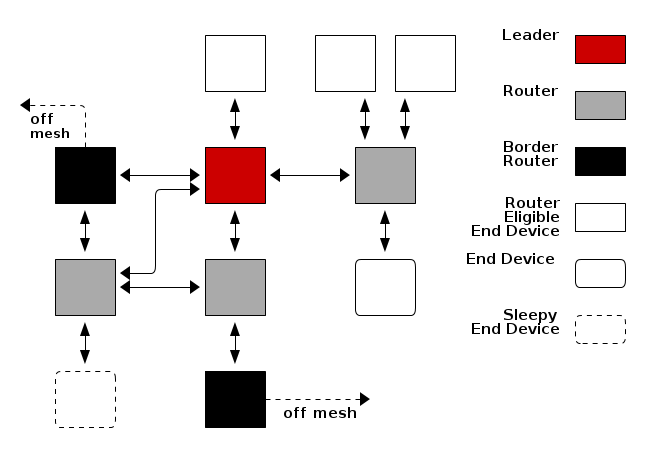

TI-OpenThread Stack Overview¶
This chapter gives a brief overview of the Thread Networking protocol with examples from the SimpleLink CC26x2 SDK. This section will present examples using the CLI example applications seen below Figure 15.

Figure 15. CLI example applications
Device Types and Network Structure¶
In the following sections we will explain; the different roles a device can take on, the two different device types, and what modes each device type uses to fill a role.
Device Roles¶
Thread devices can take on four roles within a Thread Network; End Device, Router, Leader, Border Router. All devices start as End Devices and are promoted from there as the network requires.
{kind=link}
End Devices connect to a single Router. All traffic to and from the End Device goes through its parent Router. If the End Device loses the connection to its parent Router, it will attempt to find a new parent Router.
Routers connect to other Routers and act as parents to End Devices. These devices transmit, receive, and forward messages around the mesh network. Routers can act as parents to multiple child End Devices; Routers act as proxies for their children when doing networking activities like responding to address queries. Routers maintain their next hop and cost to all other Routers in the network. Routers maintain a copy of the active dataset from the Leader.
The Leader of a Thread Network is a Router that has been elected to make decisions for the Thread Network. These decisions are choices like; the current active commissioner, Router upgrading, and more. The Leader is elected by being the first Router within a partition.
Border Routers are Routers on the Thread Network with an off-mesh route. Border Routers act as the bridge from the Thread IPv6 network and an adjacent IPv6 network like WiFi or Ethernet networks. Border Routers offer globally routable IPv6 prefixes configurable with SLAAC or DHCPv6.
Device Types¶
A Thread device can be either a Full Thread Device or a Minimal Thread Device. An FTD can act as an End Device, a Router, a Leader, or a Border Router. An MTD is limited to only the End Device role with some configurations allowed to sleep.
With the TI-OpenThread Stack a Full Thread Device can be configured at runtime to be a
Minimal Thread Device. However, a Minimal Thread Device has necessary sections
compiled out so it cannot act as a Full Thread Device. If both flavors of
device exist as examples within the SimpleLink CC26x2 SDK they will have the string ftd or
mtd in the example name. If only one flavor exists, the device type will be
noted in the example’s README. Whether a device is an FTD or MTD affects what
OpenThread library projects get linked into the final project.
Device Modes¶
In the CLI example application the command mode lists the possible modes
functions that can be enabled or disabled.
> mode
rsdn
Done
With the values:
| R | RX on while idle | Set this value to have the receiver always on. Clearing this enables the radio to sleep. |
| S | Secure IEEE 802.15.4 data requests | Set this value to enable encryption on data requests to the parent router. Clearing this may introduce a weak link in the network. Data Polls are only sent when the radio can sleep. |
| D | Full Function Device | Indication that this device should act as an 802.15.4 FFD. This is required for FTDs. |
| N | Full Network Data | Set this to indicate that this device should receive all network data, stable and unstable. |
If a device subscribes to full network data, it will receive both stable and unstable network data. Subscribing to unstable network data will increase network traffic to the device.
Device modes are tied to how that device will behave once it is attached to a Thread Network. When an MTD attaches to a Thread Network, it will attach as either a Minimal End Device (MED) or a Sleepy End Device (SED). If an MTD attaches as a SED, the parent Router is required to buffer messages for the SED until it wakes up and polls. When an FTD attaches to a Thread Network it will attach as a Full End Device (FED) or a Router-Eligible End Device (REED). If the FTD attaches as a REED, the Thread network will make the decision to promote that device to an Active Router roll if network topology or routing requires.
| Device Type | Device Role | Device Mode | Description |
|---|---|---|---|
| Full Thread Device (FTD) | Router-Eligible End Device (REED) | RSDN | A router that is acting as an End Device. This node may be promoted to a Router role as the network demands. |
| Full End Device (FED) | RSD | A Full Thread Device that has been limited to the End Device mode. | |
| Minimal Thread Device (MTD) | Minimal End Device (MED) | RS | A Minimal Thread Device that has been limited to End Device mode. |
| Sleepy End Device (SED) | S | An End device that is allowed to turn its receiver off during sleep. | |
| ” “ |
Working With a Thread Network¶
In this section we will explain how to form, attach, commission and join, with
the CLI example application. It is recommended that you have two CC26x2 LaunchPad
with a cli_ftd example programmed on them. Open a terminal for each
LaunchPad and follow along with the sections below.
Forming a Network¶
A Thread Network has to start somewhere, this is done by a device forming a new partition on a channel. This device begins by attempting to attach to a network that already exists on the channel and PANID. Since there is not a Thread Network operating there, the device begins the process of forming a Thread Partition. This is referred to as a singleton network because there is a single device in the network.
To show this behavior, follow along with the following code block on one of
your CLI FTD examples. This will set the device to channel 14 and PANID
0xface. Then start the radio with ifconfig up, and start Thread
networking with the thread start.
Note
The CLI example is not as robust as other interactive consoles like Bash.
You may have to press the enter key to get a prompt >.
> channel 14
Done
> panid 0xface
Done
> ifconfig up
Done
> thread start
Done
> state
detached
Done
> state
leader
Done
>
A Thread network is now operating on channel 14 and PANID 0xface. You
should be able to see network advertisements over the air from the Thread
Device. You can use the legacy network scan on another CLI example to see the
Thread Network.
> scan
| J | Network Name | Extended PAN | PAN | MAC Address | Ch | dBm | LQI |
+---+------------------+------------------+------+------------------+----+-----+-----+
> | 0 | OpenThread | dead00beef00cafe | face | ce77ba3a27eef08a | 14 | -29 | 61 |
Done
Attaching to a Thread Network¶
To attach to a parent router in a thread network, a device needs to know some information about a Thread Network like the channel and masterkey. This information is supposed to be disseminated to the attaching node through a commissioning process, but we are going to take advantage of the defaults in the CLI example to show just attaching.
| setting | value |
|---|---|
| Master Key | 00112233445566778899aabbccddeeff |
| Extended Pan ID | dead00beef00cafe |
| Network Name | OpenThread |
As in the section Forming a Network form a network with one of the CLI example applications.
> channel 14
Done
> panid 0xface
Done
> ifconfig up
Done
> thread start
Done
>
On another CLI example follow along below to scan for a network, attach to the network, and ping the link local multicast address.
> scan
| J | Network Name | Extended PAN | PAN | MAC Address | Ch | dBm | LQI |
+---+------------------+------------------+------+------------------+----+-----+-----+
> | 0 | OpenThread | dead00beef00cafe | face | ce77ba3a27eef08a | 14 | -29 | 61 |
Done
> channel 14
Done
> panid 0xface
Done
> ifconfig up
Done
> thread start
Done
> state
child
Done
> ping ff02::1
> 8 bytes from fe80:0:0:0:cc77:ba3a:27ee:f08a: icmp_seq=1 hlim=64 time=6ms
>
The attaching device will go through the same process as the device in Forming a Network did when creating a Thread Network partition. Except this time there will be a Thread Network to attach to instead of having to form one of its own.
Commissioning¶
Commissioning is the process where a new untrusted device is authenticated and securely brought onto the Thread Network. Commissioning can be split into two major categories, external commissioning and native commissioning. External commissioning would be the case if the commissioner resides off-mesh of the Thread Network. External commissioning requires a border agent to relay communication to and from on and off mesh. Native commissioning only requires on-mesh nodes, and will be explained here. Consult chapter 8 of the Thread 1.1.1 specification for a better overview of the commissioning protocol.
To illustrate commissioning, it is necessary to form a network to commission
with. Follow along with the following code block on one of your CLI FTD
examples. This will form a Thread Network on channel 14 and PANID
0xface, and start the node as a commissioner. From now on we will refer to
this node as the Commissioner.
Note
The masterkey is set in this example to make it different than the default OpenThread masterkey.
> masterkey ffeeddccbbaa99887766554433221100
Done
> channel 14
Done
> panid 0xface
Done
> ifconfig up
Done
> thread start
Done
> state
detached
Done
> state
leader
Done
> commissioner start
Done
>
In a second CLI FTD example, use the command eui64 to discover the
CC26x2’s EUI. This will be used by the Commissioner to securely join this
device into the Thread Network. From now on we will refer to this device as the
Joiner.
> eui64
00124b000f6e6131
Done
>
Now we need to tell the Commissioner to look for a device with the EUI
00124b000f6e6131 and some pre-shared key, we will use PPSSKK. On the
Commissioner, follow along with the code block below to add a joiner entry to
the commissioning dataset.
> commissioner joiner add 00124b000f6e6131 PPSSKK
Done
>
This network is most likely a singleton, so the change in the commissioning data set will take effect immediately. In a larger network with more nodes the Commissioner would notify the Leader of the change to the commissioning dataset and the Leader would disseminate that information to the Routers in the Thread Network.
Follow along below on the Joiner device to start the discovery and joining process. Then attach to the Thread network now that the information is present on the Joiner device.
Note
The masterkey commands are only to show that the Thread Masterkey has been updated on the Joiner by commissioning.
> masterkey
00112233445566778899aabbccddeeff
Done
> ifconfig up
Done
> joiner start PPSSKK
Done
> Join success
> masterkey
ffeeddccbbaa99887766554433221100
Done
> thread start
Done
> state
child
Done
> ping ff02::1
> 8 bytes from fe80:0:0:0:2c31:402d:60a9:6fb9: icmp_seq=1 hlim=64 time=6ms
>
Don’t forget to stop the Commissioner so that other commissioners can do their job.
> commissioner stop
Done
>
The Joiner has now been added to the Thread Network.